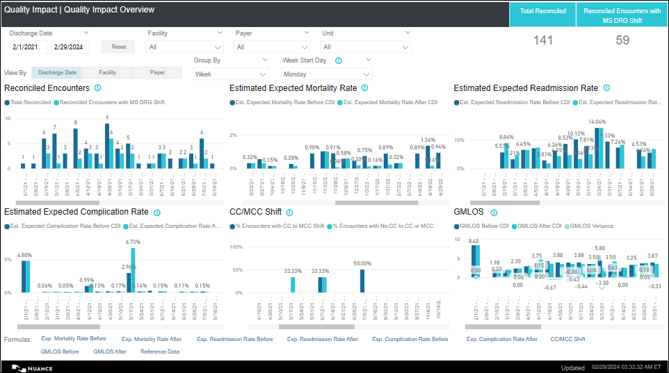
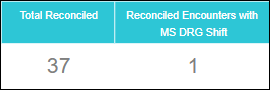
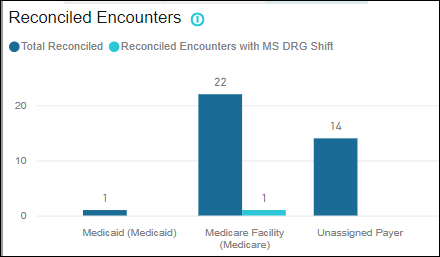
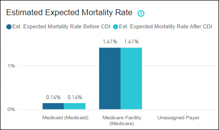
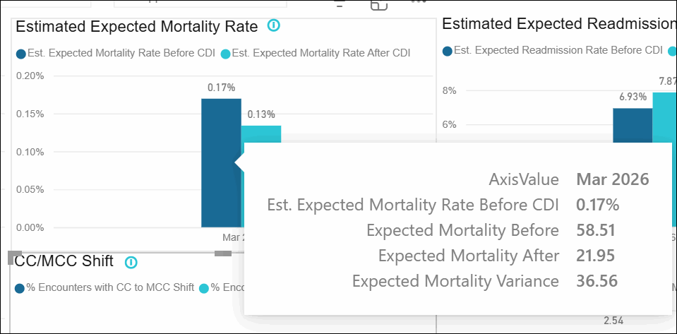
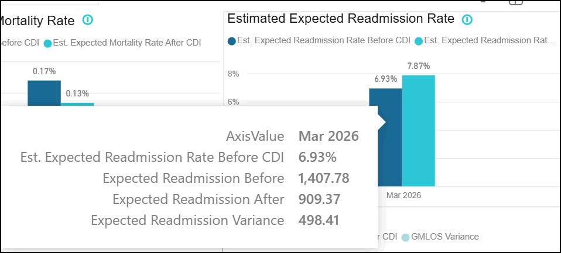
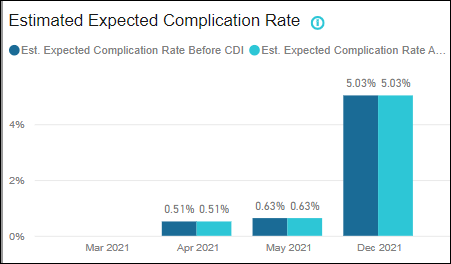
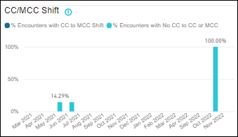
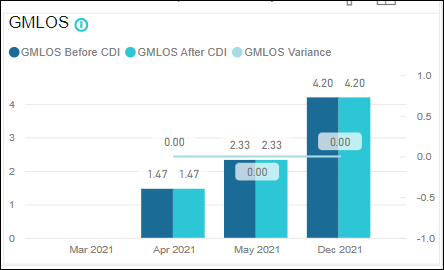

Quality Impact Overview
Overview: The Quality Impact Overview dashboard enables CDI executives and directors to analyze the overall performance of the CDI program in terms of various quality metrics such as Expected Mortality Rate, Expected Readmission Rate, Expected Complication Rate, GMLOS, and CC/MCC Shift. The dashboard also helps you group data by week, month, quarter, and year and analyze trends over different time periods and analyze them more easily.
Navigation: On the Analytics home page left side panel, navigate to .
- Reconciled Encounters
- Estimated Expected Mortality Rate
- Estimated Expected Readmission Rate
- Estimated Expected Complication Rate
- CC/MCC Shift
- GMLOS
On the top panel, you can select desired values for the slicers (refer Report Slicers ) and the corresponding data gets filtered in the charts.
For View By option, refer View By.
For filters on all pages, refer Filters on all Pages.
For Footnotes, refer Footnotes.
Quality Impact Overview

Quality Impact Overview - KPI Cards

| KPI Card | Description |
|---|---|
| Total Reconciled |
Displays the total reconciled encounters for the selected View By option. The total count of encounters that have status as Auto Reconciled, Reconciled Impact, and Reconciled No Impact. |
| Reconciled Encounters with MS DRG Shift |
Displays the count of reconciled encounters with MS DRG Shift for the selected View By option. The count of reconciled encounters that have a MS DRG Shift and have status as Reconciled Impact (Impact Type = Financial, Both, or Unassigned Impact with shift in the WT). |
Reconciled Encounters

This chart displays the Total Reconciled and Reconciled Encounters with MS DRG Shift metrics for each of the selected View By option.
- The X-axis displays the Discharge Month/Facility/Payer based on the selected View By option. (Format: Jun 2023, Jul 2023, etc.)
-
The primary Y-axis displays the count of encounters.
-
By default, the chart displays the data for 3 calendar months.
- Info Icon(text on hover): Encounter Status: Reconciled-Impact, Reconciled-No Impact, Auto-Reconciled.
| Columns | Description |
|---|---|
| Total Reconciled |
Displays the total reconciled encounters for the selected View By option. The total count of encounters that have status as Auto Reconciled, Reconciled Impact, and Reconciled No Impact. |
| Reconciled Encounters with MS DRG Shift |
Displays the count of reconciled Encounters with MS DRG Shift for the selected View By option. The count of reconciled encounters that have a MS DRG Shift and have status as Reconciled Impact (Impact Type = Financial, Both, or Unassigned Impact with shift in the WT). Note:
Reconciled-Impact (Impact Type:
Financial, Both, Unassigned Impact) encounters without a shift
in the WT (F-DRG WT – R-DRG WT = 0 or F-DRG = R-DRG WT) are not
considered in the numerator. |
Estimated Expected Mortality Rate

This chart displays the ‘Est. Expected Mortality Rate Before CDI’ and ‘Est. Expected Mortality Rate After CDI’ metrics for each of the selected View By option.
-
The X-axis displays the Discharge Month/Facility/Payer based on the selected View By option. (Format: Jun 2023, Jul 2023, etc).
-
The primary Y-axis displays the rate.
-
By default, the chart displays the data for 3 calendar months.
- Info Icon (text on hover): Encounter Status: Reconciled-Impact, Reconciled-No Impact, Auto-Reconciled.
| Column name | Description | Formula/Calculation |
|---|---|---|
| Est. Expected Mortality Rate Before CDI |
Displays the average of estimated expected mortality rate before CDI for the selected View By option. |
Est. Expected Mortality Rate Before CDI = The sum of CareChex Expected Mortality Rate values associated with the Final Coded MS-DRGs of all Auto-Reconciled and Reconciled- No Impact and Reconciled Impact (Impact Type: SOI/ROM Impact, Unassigned Impact with no shift in the WT) encounters and the CareChex Expected Mortality Rate values associated with the Reconciliation assessment MS-DRG (or Working MS-DRG when Reconciliation Assessment Info is not available) of all Reconciled Impact (Impact Type: Financial, Both, Unassigned Impact with shift in the WT) encounters that meet the report criteria / Total count of reconciled cases (Auto-Reconciled, Reconciled-Impact, Reconciled-No Impact) for the selected report criteria. (Rounded 2 decimal places. E.g. 0.56%). |
| Est. Expected Mortality Rate After CDI |
Displays the average of estimated expected mortality rate after CDI for the selected View By option. |
Est. Expected Mortality Rate After CDI = The sum of CareChex Expected Mortality Rate values associated with the Final Coded MS-DRGs of all Auto-Reconciled, Reconciled- No Impact, and Reconciled Impact (Impact Type: SOI/ROM Impact, Both, Financial, Unassigned) encounters that meet the report criteria / Total count of reconciled cases (Auto-Reconciled, Reconciled-Impact, Reconciled-No Impact) for the selected report criteria. (Rounded 2 decimal places E.g. 0.84%). |
Expected Mortality Variance

Estimated Expected Readmission Rate

This chart displays the ‘Est. Expected Readmission Rate Before CDI’ and ‘Est. Expected Readmission Rate After CDI’ metrics for each of the selected View By option.
-
The X-axis displays the Discharge Month/Facility/Payer based on the selected View By option. (Format: Jun 2023, Jul 2023, etc).
-
The primary Y-axis displays the rate.
-
By default, the chart displays the data for 3 calendar months.
- Info Icon(text on hover): Encounter Status: Reconciled-Impact, Reconciled-No Impact, Auto-Reconciled.
| Column Name | Description | Formula/ Calculation |
|---|---|---|
| Est. Expected Readmission Rate Before CDI |
Displays the average of expected readmission rate before CDI for the selected View By option. |
Est. Expected Readmission Rate Before CDI = The sum of CareChex Expected Readmission Rate values associated with the Final Coded MS-DRGs of all Auto-Reconciled and Reconciled- No Impact and Reconciled Impact (Impact Type: SOI/ROM Impact, Unassigned Impact with no shift in the WT) encounters and the CareChex Expected Readmission Rate values associated with the Reconciliation assessment MS-DRG (or Working MS-DRG when Reconciliation Assessment Info is not available) of all Reconciled Impact (Impact Type: Financial, Both, Unassigned Impact with shift in the WT) encounters that meet the report criteria / Total count of reconciled cases (Auto-Reconciled, Reconciled-Impact, Reconciled-No Impact) for the selected report criteria. (Rounded 2 decimal places. E.g 0.56%). |
| Est. Expected Readmission Rate After CDI |
Displays the average of expected readmission rate after CDI for the selected View By option. |
Est. Expected Readmission Rate After CDI = The sum of CareChex Expected Readmission Rate values associated with the Final Coded MS-DRGs of all Auto-Reconciled, Reconciled- No Impact, and Reconciled Impact (Impact Type: SOI/ROM Impact, Both, Financial, Unassigned) encounters that meet the report criteria / Total count of reconciled cases (Auto-Reconciled, Reconciled-Impact, Reconciled-No Impact) for the selected report criteria. (Rounded 2 decimal places. E.g. 0.84%). |
Expected Readmission Variance
Displays the difference between Expected Readmission Before CDI and Expected Readmission After CDI.

Estimated Expected Complication Rate

This chart displays the ‘Est. Expected Complication Rate Before CDI’ and ‘Est. Expected Complication Rate After CDI’ metrics for each of the selected View By option.
-
The X-axis displays the Discharge Month/Facility/Payer based on the selected View By option. (Format: Jun 2023, Jul 2023, etc).
-
The primary Y-axis displays the rate.
-
By default, the chart displays the data for 3 calendar months.
- Info Icon(text on hover): Encounter Status: Reconciled-Impact, Reconciled-No Impact, Auto-Reconciled.
| Column Name | Description | Formula/ Calculation |
|---|---|---|
| Est. Expected Complication Rate Before CDI |
Displays the average of estimated expected complication rate before CDI for the selected View By option. |
Est. Expected Readmission Rate Before CDI = The sum of CareChex Expected Complication Rate values associated with the Final Coded MS-DRGs of all Auto-Reconciled and Reconciled- No Impact and Reconciled Impact (Impact Type: SOI/ROM Impact, Unassigned Impact with no shift in the WT) encounters and the CareChex Expected Complication Rate values associated with the Reconciliation assessment MS-DRG (or Working MS-DRG when Reconciliation Assessment Info is not available) of all Reconciled Impact (Impact Type: Financial, Both, Unassigned Impact with shift in the WT) encounters that meet the report criteria / Total count of reconciled cases (Auto-Reconciled, Reconciled-Impact, Reconciled-No Impact) for the selected report criteria. (Rounded 2 decimal places. E.g. 0.56%). |
| Est. Expected Complication Rate After CDI |
Displays the average of estimated expected complication rate after CDI for the selected View By option. |
Est. Expected Readmission Rate After CDI = The sum of CareChex Expected Complication Rate values associated with the Final Coded MS-DRGs of all Auto-Reconciled, Reconciled- No Impact, and Reconciled Impact (Impact Type: SOI/ROM Impact, Both, Financial, Unassigned) encounters that meet the report criteria / Total count of reconciled cases (Auto-Reconciled, Reconciled-Impact, Reconciled-No Impact) for the selected report criteria. (Rounded 2 decimal places. E.g. 0.84%). |
CC/MCC Shift

This chart displays the ‘% Encounters with CC to MCC Shift’, ‘% Encounters with No CC to CC or MCC’, ‘Encounters with CC to MCC Shift’ and ‘Encounters with No CC to CC or MCC’ metrics for each of the selected View By option.
-
The X-axis displays the Discharge Month/Facility/Payer based on the selected View By option. (Format: Jun 2023, Jul 2023, etc).
-
The primary Y-axis displays the % of encounters.
-
By default, the chart displays the data for 3 calendar months.
- Info Icon (text on hover): Encounter Status: Reconciled-Impact. Impact Type: Both, Financial, Unassigned Impact with shift in the WT.
| Column Name | Description | Formula/ Calculation | Tooltip |
|---|---|---|---|
| % Encounters with CC to MCC Shift |
Displays the percentage of Reconciled Encounters with DRG Shift in which the pre CDI DRG is a CC and the final coded DRG is MCC for the selected View By option. |
% Encounters with CC to MCC Shift = Count of Reconciled Encounters with DRG Shift in which the pre CDI DRG is a CC and the final coded DRG is MCC / Count of Reconciled Encounters with DRG Shift x100. |
Count of Reconciled Encounters with DRG Shift in which the pre CDI DRG is a CC and the final coded DRG is MCC. |
| % Encounters with No CC to CC or MCC |
Displays the percentage of Reconciled Encounters with DRG Shift in which the pre CDI DRG is a No CC and the final coded DRG is either CC or MCC for the selected View By option. |
% Encounters with No CC to CC or MCC = Count of Reconciled Encounters with DRG Shift in which the pre CDI DRG is a No CC and the final coded DRG is either CC or MCC / Count of Reconciled Encounters with DRG Shift x100. |
Count of Reconciled Encounters with DRG Shift in which the pre CDI DRG is a No CC and the final coded DRG is either CC or MCC. |
GMLOS

This chart displays the GMLOS Before CDI, GMLOS After CDI, and GMLOS Variance metrics for each of the selected View By option.
-
The X-axis displays the Discharge Month/Facility/Payer based on the selected View By option. (Format: Jun 2020, Jul 2020, etc).
-
The primary Y-axis displays the GMLOS.
-
By default, the chart displays the data for 3 calendar months.
- Info Icon(text on hover): Encounter Status: Reconciled-Impact, Reconciled-No Impact, Auto-Reconciled.
| Column Name | Description | Formula/ Calculation |
|---|---|---|
| GMLOS Before CDI |
Displays the average of GMLOS before CDI for the selected View By option. |
GMLOS Before CDI = The sum of GMLOS values associated with the Final Coded MS-DRGs of all Auto-Reconciled and Reconciled- No Impact and Reconciled Impact (Impact Type: SOI/ROM Impact, Unassigned Impact with no shift in the WT) encounters and the GMLOS values associated with the Reconciliation assessment MS-DRG (or Working MS-DRG when Reconciliation Assessment Info is not available) of all Reconciled Impact (Impact Type: Financial, Both, Unassigned Impact with shift in the WT) encounters that meet the report criteria / Total count of reconciled cases (Auto-Reconciled, Reconciled-Impact, Reconciled-No Impact) for the selected report criteria. (Rounded 2 decimal places E.g., 1.41). |
| GMLOS After CDI |
Displays the average of GMLOS after CDI for the selected View By option |
GMLOS After CDI = The sum of GMLOS values associated with the Final Coded MS-DRGs of all Auto-Reconciled, Reconciled- No Impact, and Reconciled Impact (Impact Type: SOI/ROM Impact, Both, Financial, Unassigned) encounters that meet the report criteria / Total count of reconciled cases (Auto-Reconciled, Reconciled-Impact, Reconciled-No Impact) for the selected report criteria. (Rounded 2 decimal places E.g., 3.60). |
| GMLOS Variance | Displays the average of GMLOS variance for the selected View By option. | GMLOS Variance = GMLOS After CDI - GMLOS Before CDI. |
| View By | Description |
|---|---|
| Discharge Date | This option is selected by default. When you click this option, Group By and Week Start Day filters automatically become available for selection. When this option is selected, all the charts in the dashboard display the data by Discharge Month. When the ‘View By’ is Discharge Month, the data in all the charts is sorted by discharge month in ascending order.Discharge month is displayed on the X-axis. |
| Facility |
When this option is selected, all the charts in the dashboard display the data by Facility. When the ‘View By’ is Facility, the data in all the charts is sorted by Facility name in ascending order. Facility names are displayed on the X-axis. |
| Payer |
When this option is selected, all the charts in the dashboard display the data by Payer. When the ‘View By’ is Payer, the data in all the charts is sorted by Payer in ascending order. Payer description is displayed on the X-axis. |
| Slicer | Description |
|---|---|
| Discharge Date |
|
| Reset Button |
|
| Facility |
|
| Payer |
|
| Unit |
|
| "Group By" and "Week Start Date" options | These options are available only when the View By option is selected as Admit Date/Discharge Date. |
| Filter | Description |
|---|---|
| Patient Type |
|
| Admit Service |
|
| Visit Type |
|
| DRG Specialty |
|
| Formula | Text on hover |
|---|---|
| Exp. Mortality Rate Before | The avg. of CareChex Exp. Mortality Rate values associated with the Final Coded MS-DRGs of all Auto-Reconciled and Reconciled-No Impact and Reconciled Impact (Impact Type: SOI/ROM Impact, Unassigned Impact with no shift in the WT) encounters and the CareChex Exp. Mortality Rate values associated with the Reconciliation assessment MS-DRG of all Reconciled Impact (Impact Type: Financial, Both, Unassigned Impact with shift in the WT) encounters that meet the report criteria. |
| Exp. Mortality Rate After | The avg. of CareChex Exp. Mortality Rate values associated with the Final Coded MS-DRGs of all Auto-Reconciled, Reconciled- No Impact, and Reconciled Impact (Impact Type: SOI/ROM Impact, Both, Financial, Unassigned) encounters that meet the report criteria . (Rounded 2 decimal places E.g., 0.84%). |
| Exp. Readmission Rate Before | The avg. of CareChex Exp. Mortality Rate values associated with the Final Coded MS-DRGs of all Auto-Reconciled and Reconciled-No Impact and Reconciled Impact (Impact Type: SOI/ROM Impact, Unassigned Impact with no shift in the WT) encounters and the CareChex Exp. Mortality Rate values associated with the Reconciliation assessment MS-DRG of all Reconciled Impact (Impact Type: Financial, Both, Unassigned Impact with shift in the WT) encounters that meet the report criteria. |
| Exp. Readmission Rate After | The avg. of CareChex Exp. Readmission Rate values associated with the Final Coded MS-DRGs of all Auto-Reconciled, Reconciled- No Impact, and Reconciled Impact (Impact Type: SOI/ROM Impact, Both, Financial, Unassigned) encounters that meet the report criteria . (Rounded 2 decimal places E.g., 0.84%). |
| Exp. Complication Rate Before | The avg. of CareChex Exp. Mortality Rate values associated with the Final Coded MS-DRGs of all Auto-Reconciled and Reconciled-No Impact and Reconciled Impact (Impact Type: SOI/ROM Impact, Unassigned Impact with no shift in the WT) encounters and the CareChex Exp. Mortality Rate values associated with the Reconciliation assessment MS-DRG of all Reconciled Impact (Impact Type: Financial, Both, Unassigned Impact with shift in the WT) encounters that meet the report criteria. |
| Exp. Complication Rate After | The avg. of CareChex Exp. Complication Rate values associated with the Final Coded MS-DRGs of all Auto-Reconciled, Reconciled- No Impact, and Reconciled Impact (Impact Type: SOI/ROM Impact, Both, Financial, Unassigned) encounters that meet the report criteria . (Rounded 2 decimal places E.g., 0.84%). |
| CC/MCC Shift |
% Encounters with CC to MCC Shift = Count of Reconciled Encounters with DRG Shift in which the pre CDI DRG is a CC and the final coded DRG is MCC / Count of Reconciled Encounters with DRG Shift x100. % Encounters with No CC to CC or MCC = Count of Reconciled Encounters with DRG Shift in which the pre CDI DRG is a No CC and the final coded DRG is either CC or MCC / Count of Reconciled Encounters with DRG Shift x100. |
| GMLOS Before | The avg. of GMLOS values associated with the Final Coded MS-DRGs of all Auto-Reconciled and Reconciled- No Impact and Reconciled Impact (Impact Type: SOI/ROM Impact, Unassigned Impact with no shift in the WT) encounters and the GMLOS values associated with the Reconciliation assessment MS-DRG of all Reconciled Impact (Impact Type: Financial, Both, Unassigned Impact with shift in the WT) encounters that meet the report criteria. |
| GMLOS After | The avg. of GMLOS values associated with the Final Coded MS-DRGs of all Auto-Reconciled, Reconciled- No Impact, and Reconciled Impact (Impact Type: SOI/ROM Impact, Both, Financial, Unassigned) encounters that meet the report criteria. Rounded 2 decimal places E.g., 3.60. |
| Reference Data | MS-DRG level Risk Adjusted Expected Mortality/Readmission/Complication Rate values generated using the data for the top100 CareChex hospitals (Federal year 2019-2021) are used to identify the pre and post CDI expected rates for an encounter. |